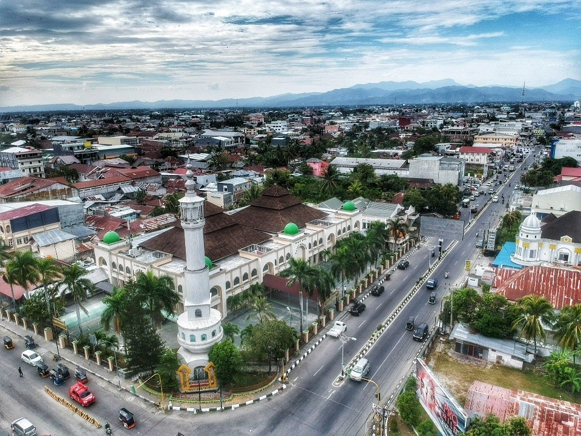
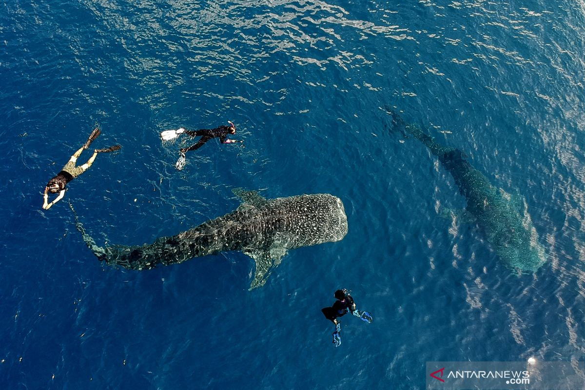

Universitas Negeri Gorontalo (UNG) is located in the heart of Gorontalo, Indonesia. Known for its commitment to excellence in education, UNG offers a wide range of undergraduate and graduate programs across various disciplines, including education, science, engineering, and social sciences. The university is dedicated to fostering a dynamic academic environment that encourages innovation, critical thinking, and community engagement.
Explore Gorontalo: The Hidden Gem of Indonesia

Gorontalo, located on the northern coast of Sulawesi, is a province renowned for its stunning natural landscapes, rich cultural heritage, and warm hospitality. This hidden gem of Indonesia offers a unique blend of unspoiled beaches, lush forests, and historical sites, making it a perfect destination for travelers seeking both relaxation and adventure.
The city of Gorontalo serves as the provincial capital and is the cultural and economic hub of the region. Visitors can explore the city's charming colonial architecture, vibrant markets, and local cuisine, which is influenced by the diverse ethnic groups that call Gorontalo home. Whether you're strolling through the streets of Gorontalo or venturing out into the countryside, you're sure to be captivated by the beauty and tranquility of this region.
Swim with Whale Sharks at Botubarani

One of the most extraordinary experiences that Gorontalo offers is the opportunity to swim with whale sharks at Botubarani. Located just a short drive from the city, Botubarani is a small coastal village that has gained international recognition as a prime spot for whale shark encounters. These gentle giants, the largest fish in the ocean, can be seen up close in the clear, warm waters of Botubarani.
The whale shark swimming tour in Botubarani is a once-in-a-lifetime experience. Visitors can snorkel or dive alongside these magnificent creatures, observing their graceful movements as they glide through the water. The tour is carefully managed to ensure the safety of both the sharks and the participants, making it a responsible and sustainable tourism activity.
The village of Botubarani has embraced its role as a guardian of these incredible animals, and the local community plays an active part in conservation efforts. By participating in this tour, visitors not only get to experience the awe-inspiring presence of whale sharks but also contribute to the preservation of marine life in Gorontalo.